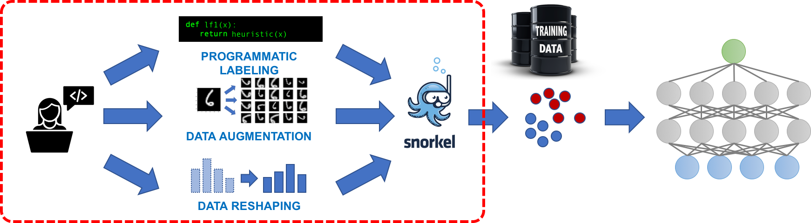
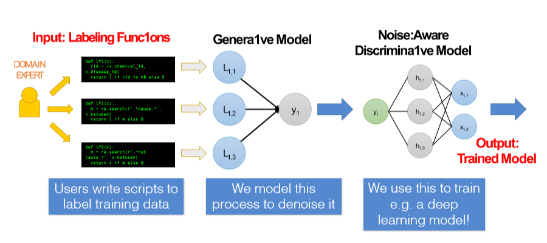
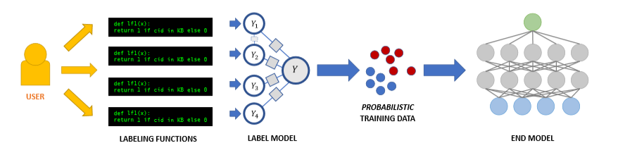

Snorkeling with Data
A system for rapidly creating training sets with weak supervision

As the name of the paper suggests “Snorkel: A System for Fast Training Data Creation”, Snorkel is a tool used for rapid creation of training datasets without hand labelling thousands of data points. With the increase in intricacies of state-of-the-art machine learning models, the requirement of large data also becomes a necessity. In today’s scenario, labelling training data is increasingly the largest bottleneck in deploying machine learning systems. Snorkel introduces a whole new paradigm of Data Programming, instead of making users hand-label the data, it makes users write labelling function that expresses arbitrary heuristics, which can have unknown accuracies and correlations, to assign labels to the data. Training set prepared by Snorkel had been proven to be much more effective and has increased predictive performance 45% (on average) and speeded up the process by 2.8x (on average) against the training set obtained by hand labelling the data.
For training standard machine learning model, we usually need a well-structured data that are easy to process. But what if we want to extract our training data from a bunch of newspapers, scientific papers, Medical images? This type of data is referred to as Dark Data. Snorkel is capable of providing us with a well structured labelled data by a process called Dark Data Extraction. This gives us a noise aware data that is capable of training high-performance predictive model.
Principles of Snorkel’s Design
-
Bring All Sources to Bear: System should enable a user to all sources of weak supervision available to create Labeling functions.
-
Training Data as the Interface to ML: The system should model label sources to produce a single, probabilistic label for each data point and train any of a wide range of classifiers to generalize beyond those sources.
-
Supervision as Interactive Programming: The system should provide rapid results in response to user supervision.
The main challenges here are unknown sources to resolve disagreements and pass on the critical lineage information to the end model being trained. Since we don’t have the ground truth here, Snorkel learns the accuracies of weak supervision sources and trains a generative model.
Snorkel Architecture

The workflow of snorkel proceeds in three main stages:
- Writing Labeling Functions
- Modeling Accuracies and Correlations
- Training a Discriminative Model
Here are some terminologies that will be used later:
- Entity: Concepts that can be separated into meaningful categories
- Relation: Semantic association between two or more entities
- Candidate: An object for which we want to make a prediction about
- Knowledge Base: A repository of structured information
Let’s consider a task of building a knowledge base of married couples by extracting mentions of spouses from the news source. We will use Data Programming approach and try to get heuristics based noisy label data.
1. Writing Labeling Functions
The first task is to get entities from the given data and there are multiple ways to shortlist entities from the corpus. We can use Spacy’s noun-phrase chunking or can use some existing knowledge base to get entities. We can then pair these entities to get all candidates which will be labelled in the following steps, here candidates are pairs of people mentioned in sentences. Now our task is to find if these candidates are a spouse of each other or not.
Humans can use real-world knowledge, context and common-sense heuristics to assign a label to a candidate. We will use these abilities to write a number of labelling functions. Some of the approaches for Declarative labelling functions are:
- Pattern Based: Use heuristics and common pattern to write labelling function
- Distant Supervision: Use any existing knowledge base to label candidates
- Weak Classifiers: Classifiers that are insufficient for our task and provides us with a noisy label.
- Labeling Function Generator: It’s an inbuilt Snorkel tool which generates multiple labelling functions from a single resource, such as crowd-sourced labels.
Labeling Functions will label candidates as positive(1), negative(-1) or abstain(0) in this case.
Using the Pattern Based approach, we can write labelling functions using the following heuristics:
- Mention of “Husband” and “Wife” in a sentence: 1
- Mention of “Spouse” in a sentence: 1
- Surnames of both entities being the same: 1
- Mention of keywords like “Boyfriend”, “Girlfriend”, “Boss”: -1
- Mention of “is/are married” keyword: 1
We can also use a knowledge base of famous married people to create a labelling function, for eg. we know “Barack Obama” and “Michelle Obama” are married, so we can directly assign a positive label to it.
2. Modeling Accuracies and Correlations
We asses the quality of our labelling functions on the following metrics:
- Accuracy: The percentage of candidates labelling function labels correctly
- Coverage: The percentage of all candidates that are labelled by more the one labelling function
- Conflict: The percentage of candidates with more than one labels that disagree
Ideally, we want high-coverage and high-accuracy labelling functions but labelling functions with probability better than random chance will work and improve the final result. Having conflicts is actually good because it allows our model to learn information about the labelling functions.
Next step to make a Generative Model to unify all weak supervision we have provided. To get an intuition of this, we can assume every labelling function as a vote and we need to find a weighted majority vote. As Condorcet’s Jury Theorem states ‘As long as most people vote correctly, adding more people improves the accuracy of majority vote’, so more the number of s, better the result. Every labelling function has its own latent accuracies which can be learned using overlap and conflicts with other labelling functions. So, if a labelling function makes a correlated decision, without knowing if right or wrong, that labelling function will be assigned a higher weight. In the end, we will have a matrix will each labelling function assigned a weight. Usually, this step is iterated a few times to get improved results.

3. Training a Discriminative Model
Last part of the pipeline is the fastest one. The output of the generative model is a set of probabilistic training labels, we now want to use these to train our final Noise-aware discriminative model. We can use techniques like Logistic Regression, SVMs, LSTM at this stage. The discriminative model learns feature representation of our labelling functions and this makes it better able to generalize to unseen candidates. This increases recall significantly and give the final output.
There is so much more to snorkel that cannot be covered in this blog. Snorkel derivatives like Snorkel Metal and Snorkel Drybell have gone further to improve both speed and accuracy of the result.
References:
- Snorkel Website
- GitHub Repository
- Snorkel: Rapid Training Data Creation with Weak Supervision (VLDB 2018)
- Data Programming: Creating Large Training Sets, Quickly (NeurIPS 2016)
- Training Complex Models with Multi-Task Weak Supervision (AAAI 2019)
- The Role of Massively Multi-Task and Weak Supervision in Software 2.0 (CIDR 2019)